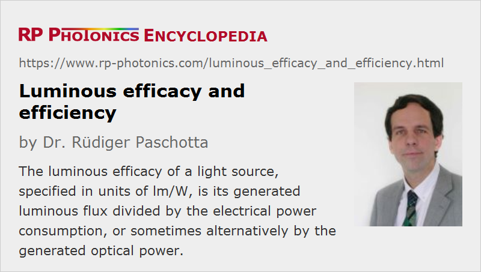

Luminous Efficacy and Efficiency
Definition: the luminous flux of a light source divided by its the radiant power or its electrical consumption (efficacy); the ratio of reached efficacy to the theoretically possible efficacy (luminous efficiency)
German: Lichtausbeute
Category: light detection and characterization
How to cite the article; suggest additional literature
Author: Dr. Rüdiger Paschotta
The luminous efficacy of a light source is its generated luminous flux divided either by its radiant flux or by its electrical power consumption. In both cases, one obtains units of lumen per watt (lm/W), but the meaning is of course different:
- If one divides by the radiant flux, the result only depends on the shape of the optical spectrum of the light source in conjunction with the applied luminosity function, which quantifies the wavelength-dependent sensitivity of the standard human eye.
- The more common definition is the luminous flux divided by the electrical power consumption of a light source. For example, a 60-W light bulb (incandescent lamp) may emit 900 lumen, which leads to a luminous efficacy of 15 lm/W. The same luminous flux could be generated with a lamp based on light emitting diodes (LEDs) with a power consumption well below 10 W, since it is much more efficacious.
Note that the luminous efficacy of a lighting device – for example, a ceiling lamp for a living room or a street lamp – can be substantially lower than that of the used light source, if much of the generated light is lost e.g. by absorption in some housing (fixture). Obviously, it makes sense to optimize not only the light source, but also the fixture. While some fixtures are essentially lossless, others completely spoil the efficiency.
The spatially directed emission of LEDs often makes it easier to avoid substantial light losses in fixtures. That factor (in addition to the high efficacy of light generation) can contribute substantially to the effective efficacy of the lighting device and thus the achieved energy efficiency.
A further important aspect is not contained in the luminous efficacy: some street lights, for example, send a lot of light into the night sky, where it is useless and even detrimental, causing light pollution.
Another important aspect is that the luminous efficacy can effectively be spoiled when using a lamp power supply of poor conversion efficiency. While incandescent lamps can generally be operated directly with line voltage, many gas discharge lamps require a special power supply. If that is made with old-style technology, it may waste substantial amounts of electrical power. Modern high-frequency switching power supplies, however, can be highly efficient, causing energy losses of only a few percent. It is of course desirable that the effective luminous efficacy of a lamp, including its power supply, is specified.
Obviously, the luminous efficacy of lighting devices is important in terms of energy efficiency and electricity consumption, since lamps with low efficacy will require more electrical power to produce the luminous flux required for illumination. Although the lost energy is converted to heat, and that heat may contribute to the required room heating, that aspect does not substantially modify the energy efficiency, because (a) heating effects are not desirable under all conditions (e.g. in summer) and (b) electric heating is comparatively inefficient due to substantial energy losses in electricity generation. When used in a heat pump, for example, the same amount of electricity could contribute far more to the heating, and that only at times where it is required.
Dependence of Efficacy on Temperature, Dimming and Aging
The luminous efficacy of some light sources is temperature-dependent. For fluorescent lamps, it tentatively gets higher with increasing temperature, while the opposite is true for light emitting diodes.
Incandescent lamps are quite insensitive to the ambient temperature, while there is a strong dependence on the operation voltage (power): when dimming down such a lamp, its efficacy can be substantially decreased further, while dimming of fluorescent lamps and LEDs can be done while maintaining the efficacy.
The efficacy may also degrade during operation due to aging processes.
Luminous Efficiency
The luminous efficiency of a light source is generally defined as its luminous efficacy divided by the maximum possible value of the efficacy. That raises the question what exactly is meant with “maximum possible”:
- One can take the ideal value of 683 lm/W as achieved for an ideally efficient light source a meeting at 555 nm. In that case, a light bulb with 15 lm/W will have a luminous efficiency of 15 / 683 = 2.2%. Even an ideally energy-efficient white light source could then never reach 100% luminous efficiency, since the efficacy is necessarily reduced for the red and blue spectral components, for example.
- Alternatively, one may take the luminous efficiency of an ideally efficient light source having the same shape of optical spectrum as the light source under consideration. For a white light source, for example, that value will be substantially lower, so that the resulting luminous efficacy will come out correspondingly larger. As a quantitative example, a white LED lamp may have a luminous efficacy of 180 lm/W, and its spectrum may lead to a theoretically possible luminous efficacy of 300 lm/W; the luminous efficiency would then be 180 / 300 = 60%. That number indicates how close the technology is to the theoretically possible maximum for the given light spectrum.
It seems that the former definition is more common in the literature; many authors actually seem not to be aware of the question which definition exactly to choose.
The Efficiency of Lighting
The efficiency of a lighting system largely depends on the luminous efficacy of light sources, but some additional aspects should be kept in mind, as explained in the following.
The operation cost of an illumination system is essentially determined by the required luminous flux times the duration of operation and divided by the luminous efficacy of the lighting devices (not just the light generation). That calculation delivers the required electrical energy e.g. within 24 hours. However, this approach, applied for example to a particular room, is rather crude, because it disregards the detailed illumination needs.
A more accurate approach is to consider in which zones of a room what level of illuminance is required. For example, it is often sufficient to have a high illuminance at a few places where people must be able to read documents; the rest of the room can be kept at a significantly lower light level. For maximum efficiency, one then provides a certain base level of illumination (often with diffuse sources) and some additional more directed light sources for further illuminating limited areas. The importance of a high luminous efficacy is generally highest for the base illumination, which involves the largest part of the overall luminous flux.
Other important aspects for the efficiency are how much daylight can be utilized and how much of the generated light is absorbed e.g. on dark walls. Note that white building materials reflect or scatter most of the incident light, thus strongly reducing the required luminous flux from artificial light sources, compared with a room containing a lot of dark materials.
Questions and Comments from Users
Here you can submit questions and comments. As far as they get accepted by the author, they will appear above this paragraph together with the author’s answer. The author will decide on acceptance based on certain criteria. Essentially, the issue must be of sufficiently broad interest.
Please do not enter personal data here; we would otherwise delete it soon. (See also our privacy declaration.) If you wish to receive personal feedback or consultancy from the author, please contact him e.g. via e-mail.
By submitting the information, you give your consent to the potential publication of your inputs on our website according to our rules. (If you later retract your consent, we will delete those inputs.) As your inputs are first reviewed by the author, they may be published with some delay.
See also: luminous flux
and other articles in the category light detection and characterization
|  |
If you like this page, please share the link with your friends and colleagues, e.g. via social media: 


These sharing buttons are implemented in a privacy-friendly way! |
2020-03-29
A particular deep blue commercial LED emits an optical power of 453 mW at 455 nm when the drive current is 350 mA and the forward voltage is 3.2 V. What are the power conversion efficiency, external quantum efficiency and the luminous efficacy?
Answer from the author:
Power conversion efficiency: 453 mW / (3.2 V · 350 mA) = 40.4%
External quantum efficiency: photon flux / electron flux = (453 mW / (h c / (455 nm)) / (350 mA / e) = 47.7%
Luminous efficacy: 0.072 · 683 lm/W · 453 mW / (3.2 V · 350 mA) = 19.9 lm/W, assuming photopic vision, where the response function delivers 0.072 at 455 nm. Remark: despite the good quantum efficiency, the luminous efficacy is low due to the poor responsivity of the human eye at 455 nm.